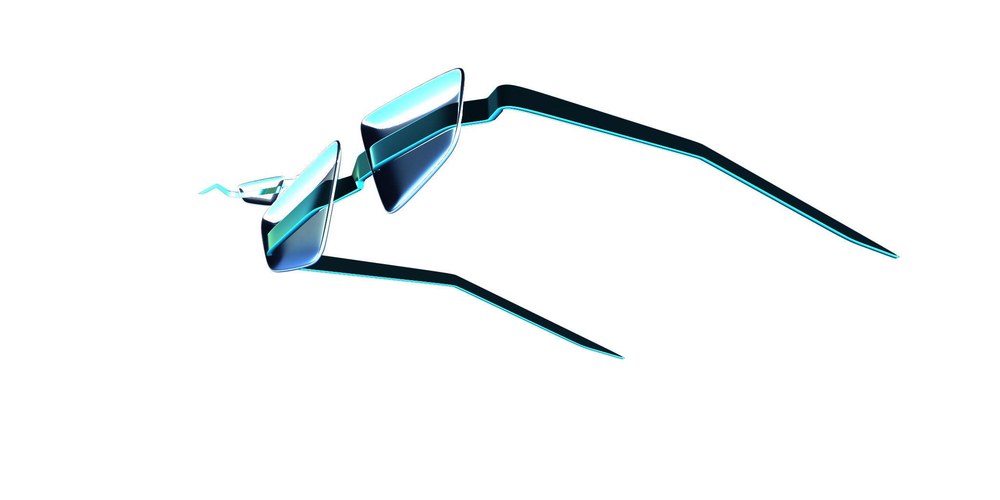

Gentle Monster SG
Layer Break
sg.001 alpha (product on transparent background) · its own RGBA channel handles compositing. SDXL outputs use CSS masks to extract product or environment. Toggle layers individually.





Environment (sg mask inverted — hides product)
Beauty Product · sg.001 alpha (PNG transparency, no CSS mask needed)
SDXL Product (sg-cut CSS mask applied — these have no alpha)
Analysis (multi-select)